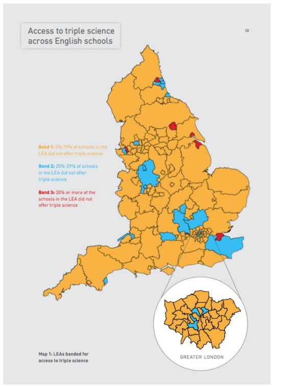
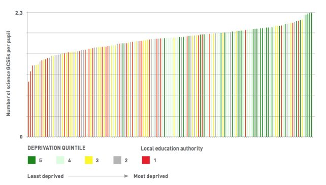

شبکه خدمات عمومی باز دو بخش عمده کار را انجام داد و بررسی کرد که چگونه دادههای دولتی، فراتر از مکانیسمهای سنتی مسئولیتپذیری مانند جداول لیگ، میتوانند برای ارزیابی مدارس استفاده شوند. خروجیهای حاصل - راهنمای مدارس GCSE که با همکاری گاردین تهیه شد و گزارشی در مورد عدم دسترسی به موضوعات "سخت" مانند علوم سه گانه در GCSE در مناطق محروم - موفق شد هم به والدین و هم به سیاستگذاران برسد و توجه مطبوعات را به خود جلب کرد. این مطالعه بر سهمی که دادههای باز میتواند در بهبود خدمات عمومی داشته باشد، متمرکز است.
- OPSN با دادههایی که داشت، هم یک داستان محلی و هم یک داستان ملی را بیان کرد. ابزار GCSE Schools Guide به کاربران اجازه میدهد ببینند دادهها درباره مدارس نزدیکشان چه میگویند. گزارش فقدان گزینهها، دیدگاهی گسترده و ملی داشت.
- تاثیر بلندمدت کار OPSN را میتوان به بهترین شکل با مشارکت OpenCorporates در کمپین شفافیت مالکیت ذینفع در نظر گرفت: تنها یک قطعه از یک معمای پیچیده.
- برخی از دادههای OPSN مورداستفاده در این مورد از پایگاهداده National Pupil که دادهباز نیست، گرفته شدهاست. بسیاری از دادههای موردنیاز برای ارزیابی معنادار خدمات عمومی هرگز منتشر نخواهند شد - و در واقع هرگز نباید منتشر شوند - به عنوان منبع دادهباز زیرا حاوی اطلاعات شخصی در مورد کاربران خدمات است. به نفع عموم است که درک این دادهها به طور کامل در خدمات دولت قرار ندارد. اما منافع مسلم و توجه منفی مطبوعات که توسط سخنرانی موثر و شفاهی حریم خصوصی در بریتانیا هدایت میشود، این نوع از سیاست، به اشتراکگذاری دادهها را "یک فضای سیاسی زننده" میکند.
- نه تفسیر رسمی دولت از داده خدمات عمومی و نه تفسیر ارائهشده توسط مطبوعات به طور کامل نیازهای کاربران خدمات عمومی را برآورده نمیکنند. اما مدلهای تجاری برای سازمانهایی که میتوانند به نیازهای مردم خدمت کنند، ضعیف هستند.
- نخستوزیر، دیوید کامرون پیشبینی کرد که سیاست دادهباز، یک ارتش داوطلب از حسابرسان کارآمد را به راه خواهد انداخت که دادههای دولت را به نفع عموم مورد بازجویی قرار خواهد داد. در واقع، پیشروی ارتش، کند بودهاست.
مورد عددی
پیشینه تحقیق
شبکه خدمات عمومی باز (OPSN) از دادهها برای تشویق بحث در مورد کیفیت خدمات عمومی به روشهایی استفاده میکند که کاربران خدمات را درگیر و توانمند میسازد. این انجمن که در انجمن حکومتی هنر میزبانی میشود، توسط شارلوت آلدراته، مشاور سابق سیاست دولت، و به ریاست راجر تیلور، زمانی که یک روزنامهنگار فایننشال تایمز در سال ۱۹۹۹ دکتر فاستر را تاسیس کرد، اداره میشود، یک سرویس اطلاعات اساسی که بر عملکرد بیمارستانها تمرکز داشت و بعدا زمانی که بخشی از آن به دولت فروخته شد، مورد بحث قرار گرفت.
OPSN اولین گزارش مهم خود را منتشر کردهاست - توانمندسازی والدین، بهبود روند پاسخگویی، درباره عملکرد مدارس در انگلستان - در سپتامبر ۲۰۱۳. روزنامه گاردین، برای مدتی با انتشار خود، پورتال راهنمای مدارس GCSE را منتشر کرد که به والدین اجازه میداد تا از طریق دادههای OPSN به جستجو بپردازند تا کشف کنند کدام مدارس در کدام موضوعات در انگلستان بهتر عمل میکنند و چگونه مدارس در بهبود نتایج دانشآموزان در امتحانات موفق هستند. در سال ۲۰۱۵، OPSN این کار را با گزارشی که بر موارد موضوعی تاکید داشت، دنبال کرد، مقامات آموزش محلی (LEAs) در انگلستان که در آن موضوعات چالشبرانگیز مانند علوم سهگانه و زبانهای مدرن کم ارائه شدند یا اصلا ارائه نشدند.
دادهها
هدف OPSN برای اولین گزارش خود، توانمندسازی والدین، بهبود مقررات حسابداری، این بود که ببیند منابع داده موجود منتشرشده توسط دولت چه چیزهایی میتوانند در مورد مدارس به والدین بگویند. این مقاله از مجموعه دادههای باز منتشر شده توسط وزارت آموزش و پرورش (DfE) در سایت data.gov.uk شامل دادههای عملکرد آزمون و دادههای ویژگیهای مدرسه و دانشآموزان استفاده میکند.
این گزارش همچنین از گزارشهای بازرسی منتشرشده توسط آشتد، تنظیمکننده مدارس دولتی، استفاده کردهاست. در این گزارش از اغلب افراد خواسته شدهبود تا دادههای موجود در این گزارشها را به شکلی در دسترس منتشر کنند که تحلیل را ممکن سازد، و اشاره شد که در حال حاضر عمدتا توسط مدرسه موجود است.
برای گزارش دوم، فقدان گزینهها: اینکه چگونه انتخابهای آکادمیک یک دانشآموز تحتتاثیر موضوعی قرار میگیرند که آنها از دادههای پایگاهداده National Pupil DfE استفاده کردهاند. این مجموعه داده، دادهباز نیست و داده سطح شاگردانی که نگه میدارد، تحت قانون حفاظت از داده، "شخصی" تلقی میشود. DfE مجاز به به اشتراکگذاری آن در سطوح مختلف جزئیات تحت شرایط و ضوابط دقیق با نهادهای نامبرده (از جمله مدارس، مقامات محلی، و دیگر ادارات دولتی) است. اشخاص ثالث میتوانند برای دسترسی مجدد به دادهها - در سطوح مختلف جزئیات - برای انجام تحقیقات یا ارائه خدمات اطلاعاتی به منظور ترویج آموزش و پرورش یا رفاه کودکان، به کار روند. DfE راهنمایی در مورد چگونگی گزارش تحلیل دادهها به منظور حفاظت از حریم خصوصی دانشآموزان در پایگاهداده را فراهم میکند.
OPSN هر دو گزارش را با انتشار داده مربوط به خود همراهی کرد و دادههایی را آزاد کرد که تحلیلهای خود را برای دیگران به منظور استفاده مجدد هدایت میکرد. دادهها در قالب OpenXML مایکروسافت اکسل (xlsx.)، تحت مجوز CC-BY منتشر میشوند.
روند تاثیر
هدف از این پروژه، نشان دادن این بود که شفافیت خدمات عمومی، که با منابع دادهباز هدایت میشود، "میتواند رویکرد غنیتر و چندبعدیتری برای پاسخگویی نسبت به آنچه که توسط جداول لیگ نتایج آزمون فعلی و رژیم مبتنی بر گزارش ارائه میشود"را پشتیبانی کند. OPSN معتقد است که داده مربوط به مدارس و دیگر خدمات عمومی نشاندهنده "تعداد زیادی حقیقت است که توسط چارچوبهای پاسخگویی فعلی درک نمیشوند. OPSN در گزارش خود به نقل از تحقیقی میپردازد که نشان میدهد چنین چارچوبهایی "تاثیر نسبتا کمی بر انتخابهایی دارند که افراد انجام میدهند." شارلوت آلریت میگوید: "آنچه که خوب به نظر میرسد با آنچه که شما سعی دارید ارزیابی کنید متفاوت است." کاربران مختلف خدمات میخواهند سوالات مختلفی را برای ارزیابی خدمات عمومی با توجه به زمینههای خود بپرسند.
در گزارش سال ۲۰۱۳، OPSN یک هیات از متخصصان را تشکیل دادهاست که مقامات صلاحیتها، فرمانداران مدارس، دانشآموزان، معلمان و دیگران را نمایندگی میکنند. آنها با هم مجموعهای از ویژگیهای را که فکر میکردند شیوه تفکر والدین در مورد کیفیت آموزش ارائهشده توسط مدارس همانند امکانات، جو یادگیری، برنامهدرسی و پیامدهای دانشآموزان را نشان میدهد.
سپس OPSN در مورد تفسیر منابع داده در دسترس تنظیم کرد تا ببیند که آنها در پرداختن به تغییرات در این ویژگیها چقدر مناسب بودند. دادههایی که آنها به دست آوردند شامل معیارهای جدید، مانند نرخ جذب موضوعات مختلف در GCSE بودند. این داده توسط گاردین در یک درگاه قابل جستجو پس از ارائه کد منتشر شد که به والدین اجازه داد تا مدارس محلی را مقایسه کنند؛ به عبارتی نام آن راهنمای مدارس GCSE گاردین بود.
در طول تحقیق برای آگاهسازی والدین، بهبود روند پاسخگویی بود که راجر تیلور میگوید او متوجه شد چند مدرسه نتایج GCSE را برای موضوعات چالشبرانگیز مانند علوم فردی (فیزیک، زیستشناسی و شیمی - که معمولا به "علوم سهگانه" خلاصه میشوند) و زبانهای مدرن نشان نمیدهند. این مشاهده منجر به دومین پروژه تحقیقاتی آموزشی OPSN با استفاده از دادههای پایگاهداده Pupil شد تا مشخص شود کدام مدارس این موضوعات را در سراسر انگلستان ارائه نمیدهند.
این گزارش شش LEAs را شناسایی کرد که در آن ۳۰ % یا بیشتر مدارس هیچ دانشآموزی در زمینه علوم سهگانه ثبتنام نکرده بودند: مدوی، سلوگ، نیوکاسل در تین، شهر کینگستون در هال، نونسلی، و شمال شرق لینکولنشایر. تنها در ۴۱ مدرسه از ۱۵۱ مدرسه انگلیسی، همه مدارس حداقل یک دانشآموز دارند که در علوم سهگانه ثبتنام کردهاند (شکل ۱ را ببینید).

این گزارش سپس توجه خود را به تمام علوم GCSE ها معطوف کرد (از جمله علوم جوایز دوگانه، که موضوعات زیستشناسی، فیزیک و شیمی را پوشش میدهند و ارزش دو GCSE را دارد). این یک LEA را کشف کرد که در آن بعضی از دانشآموزان هیچ موضوع علمی (Knowsley) را نمیپذیرفتند.
ترسیم این دادهها در مقابل دادههای مرتبط با محرومیت (داده باز موجود در سایت data.gov.uk)- با استثناءهای قابلتوجه - نشان داد که رابطهای وجود دارد (شکل ۲ را ببینید). این گزارش نتیجه گرفت که "علوم کمتر GCSE ها به ازای هر شاگرد تمایل به رخ دادن در مناطق فقیرتر دارند."

تاثیر
دفتر کابینه، که راهنمای مدارس GCSE گاردین را به عنوان مطالعه موردی دادهباز یک ماه پس از راهاندازی آن معرفی کرد، گزارش میدهد که این درگاه ۲۰۰۰۰ کاربر را در اولین روز انتشار خود جذب کردهاست. با توجه به تعداد دانشآموزانی که نتایج GCSE را در سراسر انگلستان، ولز، اسکاتلند و ایرلند شمالی در سال ۲۰۱۵ دریافت کردند، این نسبت قابلتوجهی از مخاطبان هدف این پروژه است. راهنمای مدارس GCSE نیز توسط بانک جهانی به عنوان مثالی از موارد استفاده از منابع دادهباز در بخش آموزش و پرورش انتخاب شدهاست.
"ما نمیتوانیم اجازه دهیم نسل به نسل دانشآموزان صرفاً به دلیل تصادف یکسان بودن محل تولدشان ناامید شوند."
کریس اسکیدمور نماینده مجلس
گزارش عدم وجود گزینهها در سال ۲۰۱۵ زمانی که در همان سال منتشر شد، پوشش مطبوعاتی قابلتوجهی دریافت کرد. تیتر آن این بود که برخی از LEA ها در انگلستان، زمینههای موضوعی بودند، که به طور گسترده توسط BBC گزارش شد و توسط کارشناسان آموزشی رسانه خبری و افراد محلی در مناطقی که عملکرد ضعیفی داشتند، انتخاب شد. دیلی مایلی نیز این موضوع را برجسته کرد و انتقاد خود را از جداول رسمی لیگ نشان داد.
کریس ساکیمور، عضو سابق کمیته منتخب آموزش و پرورش، در پاسخ به عدم گزارش گزینهها، لایحهای را در مجلس عوام مطرح کرد که فرصت مطالعه علوم سهگانه را برای دانشآموزان تضمین میکند و به طور گسترده از یافتههای این گزارش نقلقول میکند. در پایان سخنرانی خود چنین گفت:
فقر اشتیاق، که بازهها را کاهش میدهد و نورهایی را که باید به شدت روشن باشد، کمرنگ میکند، هنوز هم به مناطقی از سیستم آموزشی ما میرسد و به مکانهایی میرسد که آموزش برای دگرگون کردن زندگی جوانان بیشتر موردنیاز است. ما نمیتوانیم اینگونه ادامه دهیم که نسل به نسل از دانشآموزان صرفاً به دلیل تصادفی یکسان بودن محل تولد یا مدرسهای که در آن تحصیل میکنند ناامید شوند.
OPSN توانست مخاطبان هدف خود را جذب کند: مردم، رسانهها و سیاستگذاران. این واقعا تحسینبرانگیز است. اما فراتر از آن، چگونه میتوانیم تاثیر آن را درک کنیم؟ آیا مداخله OPSN بر در دسترس بودن سوژه در مناطق محروم تاثیر میگذارد؟
مانند بسیاری از قوانین پیشنهادشده توسط حامیان، لایحه کریس ساکیمور آن را در فرآیند قانونگذاری بریتانیا به دور از دسترس قرار نداد. در هر صورت، یک کارشناس برگزارکننده در پاسخ به فقدان گزینهها با حضور نویسنده در ژوئن ۲۰۱۵ به این نتیجه رسید که مشکلات مطرح شده توسط این گزارش، به احتمال زیاد توسط اصلاحات آموزشی گستردهتر مورد توجه قرار خواهند گرفت. در پایان، گزارش فقدان گزینهها ممکن است تنها یک مدرک باشد که در سفر طولانی به سمت اصلاح سیاست مطرح شدهاست.
“همه این اطلاعات در مورد بیمارستانها یا پزشکان یا هر چیز دیگری: اگر نمیتوان از آن برای پاسخ به این سؤال استفاده کرد که "آیا باید این درمان را انجام دهم؟"، "آیا باید به این پزشک اجازه دهم مرا عمل کند؟"، تنها کاری که میکند این است که به سادگی اجازه میدهد عموم مردم از طریق پنجره شیشه ای تماشا کنند و ببینند که چگونه حرفهایها آن را در بین خود هماهنگ میکنند."
راجر تیلور، OPSN
بحث و گفتگو
موفقیت مداخلات OPSN در فضای آموزشی، بازتابی از پروژه آمریکایی انجامشده توسط پروپابلیکا در سال ۲۰۱۱ است. برنامه Gap فرصت از دادههای وزارت آموزش و پرورش آمریکا استفاده کرد تا نشان دهد که در برخی ایالتها مانند فلوریدا، دانشآموزان فقیر و غنی تقریبا دسترسی برابر به دورههای سطح بالا دارند، سایر ایالتها مانند کانزاس، مریلند، و اوکلاهاما، فرصت کمتری را در مناطق محروم ارائه میدهند. اسکات کلین از پروپابلیکا در تحلیل خود از این پروژه مینویسد:
ما واقعا سخت تلاش کردیم تا مطمئن شویم که این برنامه "دور" و داستانی "نزدیک" را روایت میکند. به عبارت دیگر، این برنامه نیاز به ارائه یک تصویر ملی گسترده و انتزاعی دارد – بهطورخاص، راهی برای مقایسه نحوه عملکرد کشورها نسبت به یکدیگر در دسترسی آموزشی. اما با توجه به این که این انتزاع گاهی خوانندگان را گیج میکند که دادهها برای آنها چه معنایی دارد، ما همچنین میخواهیم که خوانندگان بتوانند مدرسه محلی خود را پیدا کنند و آن را با مدارس فقیر در منطقه خود مقایسه کنند.
کار OPSN همچنین دو داستان متفاوت را بیان میکند. درخواست برای عموم (از طریق راهنمای مدارس GCSE) و درخواست برای مطبوعات و سیاستگذاران (از طریق گزارش فقدان گزینهها) بسیار متفاوت است، و به درکی اشاره میکند که کار OPSN را هدایت میکند: کاربران خدمات میخواهند سوالات متفاوتی از دادههای خدمات عمومی نسبت به ارائهدهندگان خدمات بپرسند. در قلب این رویکرد، چالشی برای مدلهای تفکر در مورد بهبود خدمات عمومی از طریق منابع دادهباز وجود دارد.
راجر تیلور، راجر تیلور، رئیس OPSN، میگوید: "مردم به اکتشافات ساده نیاز دارند تا در زندگیشان راهنمایی کنند و بفهمند چه اتفاقی در حال وقوع است. او عمیقاً در مورد مدل بهبود خدمات عمومی از طریق دادههای باز که توسط دیوید کامرون مورد تمجید قرار میگیرد، تردید دارد، زمانی که وی در سال ۲۰۱۰ اقدامات جدیدی را برای انتشار مخارج دولت محلی اعلام کرد، تولد "یک ارتش کامل از حسابرسان را پیشبینی کرد که به کتابها نگاه میکنند."
موارد پرمخاطب، اتلاف هزینههای عمومی به لطف دادههای باز افشا شده است، برای مثال، زمانی که صدها میلیون پوند صرفهجویی بالقوه سالانه در نسخههای استاتینها در سال ۲۰۱۲ شناسایی شد. به منظور بهبود خدمات عمومی در سال ۲۰۱۰، چندین مفسر اشاره کردهاند که ارتش کامرون، تا حد زیادی، هنوز پیشروی نکرده است.
در نوامبر ۲۰۱۲، تبادل سیاستهای اتاق فکر، فقدان حسابرسان حرفهای را به این حقیقت نسبت داد که دادههایی مانند سیستم اطلاعات ترکیبی آنلاین هزینههای دولت (COINS)، "غیرقابلاستفاده" بودند. و در آوریل ۲۰۱۵، موسسه دولت اشاره کرد که بسیاری از حسابرسان منابع دادهها باید دولت را حفظ کنند تا در دسترس نباشد، یا کیفیت ضعیفی داشته باشند.
اما ممکن است دادهها تنها نیمی از مشکل باشند. راجر تیلور میگوید در حالی که تجزیه و تحلیل دادههای خوب یک شرکت بزرگ را برای فراهم کردن نیازها ندارد، به منابع قابلتوجهی نیاز دارد:
تجزیه و تحلیل مجموعه دادههای پیچیده و تلاش برای به دست آوردن نشانههای مفید از تمام اختلالگران و البته زمانبر است. این کاری نیست که شما بتوانید خیلی ساده انجام دهید. این کار واقعا به تعداد کمی از افراد بسیار با استعداد و حرفهای منجر میشود.
او با توجه به تجربه خود با دکتر فاستر، نگران است که مدلهای تجاری برای حمایت از چنین عملیاتی "بسیار ضعیف" باشند. اگرچه او مشخص کرده است که وزارت بهداشت "هرگز سعی نکرد از نفوذ خود برای تاثیر بر آنچه که ما گفتیم استفاده کند، " اما پس از پرداخت ۱۲ میلیون پوند برای ۵۰ % سهم شرکت در سال ۲۰۰۶، "اقتصاد پایه" به این معنی بود که این سازمان بر چگونگی برآورده کردن نیازهای اطلاعاتی سازمانهای NHS و متخصصان مراقبتهای بهداشتی تمرکز کرد، نه اینکه چگونه نیازهای اطلاعاتی مردم و بیماران را برآورده کند:
متخصصان همیشه نسبت به جنبه محتاطتر اشتباه میکنند، با این نتیجه که چیزی که شما تمایل دارید از سازمانهای حرفهایتر به دست آورید واقعا ارائههای پیچیده داده، با مقادیر عظیمی از هشدارها در مورد تفسیر بیش از حد است. آنها تمایل دارند که ارائه دادههای خام را به جای [ بیان ] معنای آن ترجیح دهند، با این نتیجه که این به معنای هیچ چیزی برای عموم نیست و آنها واقعا نمیتوانند بر روی آن عمل کنند.
این وضعیت به کاربران سرویس قدرت نمیدهد:
تمام این اطلاعات در مورد بیمارستانها یا پزشکان یا هر چیز دیگر: اگر نمیتوان از آن برای پاسخ به این سوال استفاده کرد که " آیا باید این درمان را داشته باشم؟ آیا باید بگذارم این دکتر مرا عمل کند؟" -اگر فقط در داخل سیستم قابل استفاده باشد- پس تنها کاری که انجام میدهد این است که به مردم اجازه میدهد از طریق پنجره شیشهای تماشا کنند و ببینند که چگونه حرفهایها آن را در بین خود هماهنگ میکنند.
تیلور اضافه میکند که رویکردهای رسانههای سنتی به ارزیابی خدمات عمومی اغلب مردم را گمراه میکنند، زیرا "روش گفتگوی رسانهای ما از طریق بیش از حد ساده کردن است." اما او همچنین معتقد است که حتی زمانی که رسانهها رویکرد با سواد اطلاعاتی بیشتری اتخاذ میکنند، مدل کسبوکار رسانهای از انواع خدمات اطلاعاتی شخصی شده که مردم نیاز دارند، پشتیبانی نمیکند:
برای به دست آوردن این اطلاعات به نقطهای که در آن برای یک فرد کار میکند و یک مدل کسبوکار که کار میکند، احتمالا به یک ارتباط بسیار صمیمی با آن فرد نیاز دارید. یک مدل قدیمی چاپ و نشر، که در آن شما سعی میکنید از انتشار رتبهبندیها یا برگههای مشاوره و یا این قبیل موارد درآمد کسب کنید - واقعا سخت است که این کار را انجام دهید.
لازم به ذکر است که گزارش فقدان گزینهها با استفاده از داده غیرباز تولید شد: نسخه پایگاهداده National Pupil که محققان برای آن نیاز به تایید دپارتمان آموزش به منظور دسترسی دارند. تیلور معتقد است که از طریق دستور کار داده باز، "ما استانداردی را برای انتشار داده تنظیم کردهایم که برای اکثر اطلاعاتی که از نظر خدمات عمومی مورد توجه هستند، کاملا نامناسب است:"
برای هرکاری که با سلامت روانی، آموزش و پرورش، برای درک اینکه چه اتفاقی در حال رخ دادن است، باید در مورد نتایج برای مردم، چه اتفاقی برای آنها افتاده و اطلاعات مربوط به شرایط شخصی آنها را درک کنید. هیچ راهی وجود ندارد که این داده را در فرمتهای قابلاستفاده کنار هم قرار دهید و سپس به سادگی آن را تحت مجوز دولت باز قرار دهید.
تیلور میگوید: "به نفع عموم است که درک آنچه [دادهها میگویند] به طور کامل در دولت قرار ندارد، اما گرفتن این اطلاعات از دولت و به دست اشخاص ثالث تایید شده، برای مثال در شرایطی مشابه با آنچه که در پایگاهداده ملی Pupil وجود دارد، دشوار است.” تیلور میگوید: "این یک فضای سیاسی زننده برای تلاش و حرکت رو به جلو است." او معتقد است که مبارزات انتخاباتی موثر و شفاهی حریم خصوصی در بریتانیا به این معنی است که این نوع از به اشتراکگذاری دادههای دولتی توجه منفی مطبوعات را به خود جلب میکند، در حالی که در پشتپرده، منافع مسلم مانند نهادهای حرفهای و ادارات دولتی از قدرت خود برای جلوگیری از پیشرفت استفاده میکنند. در مقابل:
دادهباز واقعا ساده است. بنابراین میبینید که چرا تمام تمرکز سیاسی به این سمت رفتهاست. اما متاسفانه، ما در واقع به خروجیهای مفید زیادی از آن فرآیند دست نخواهیم یافت.
فراخوانهایی برای اقدام
برای سیاستگذاران
سیاستگذاران باید نقش اطلاعات شخصی در بهبود خدمات عمومی را درک کنند. هرگز مناسب نخواهد بود که چنین دادههایی را به طور کلی به عنوان منبع دادهباز در دسترس قرار دهیم، اما هیچکدام برای درک این که این دادهها چه چیزی در مورد خدمات عمومی برای اقامت کامل در دولت باید بگویند مناسب نیست. دولتهای موفق در بریتانیا اعتماد عمومی به مسائل مربوط به امنیت و بهرهبرداری از دادههای شخصی حساس را تخریب کردهاند. اگر سیاستگذاران در مورد استفاده از دادهها برای بهبود خدمات عمومی جدی باشند، آنگاه استراتژیهایی برای بازیابی آن اعتماد، و همچنین مقابله با منافع مقرره شدهای که از بررسی دقیق خدمات عمومی توسط طرف سوم میترسند، باید در صدر دستور کار آنها قرار گیرند.
برای طرفداران داده باز
طرفداران دادهباز باید متوجه شوند که انتشار دادهباز که شخصا قابلشناسایی و حساس است، به عنوان دادهباز، مناسب نیست.
طرفداران داده باز باید با طرفداران حریم خصوصی همکاری کنند تا سیاستگذاران را تشویق کنند تا در این "فضای سیاسی زننده" به روشهایی مشارکت کنند که از لحاظ فنی باسواد باشند و به حریم خصوصی احترام بگذارند.
برای سرمایهگذاران
سرمایهگذاران باید در مورد ظرفیت "حسابرسان" داوطلبانه برای بهبود خدمات عمومی، واقعگرایانه باشند. پشتیبانی هدفمند برای جمعآوریکنندگان متخصص باید بخشی از ترکیب تامین مالی دادهباز باشد.